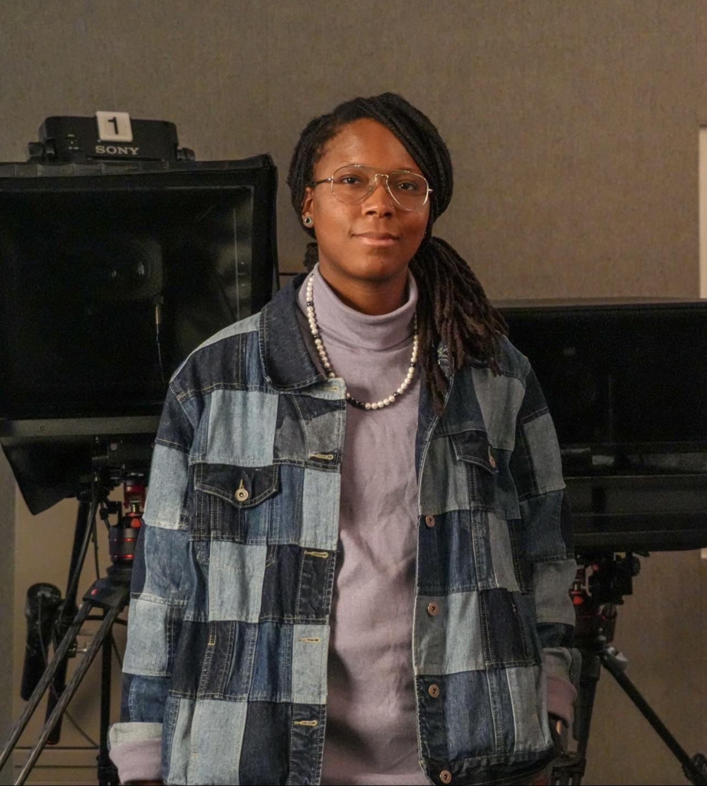
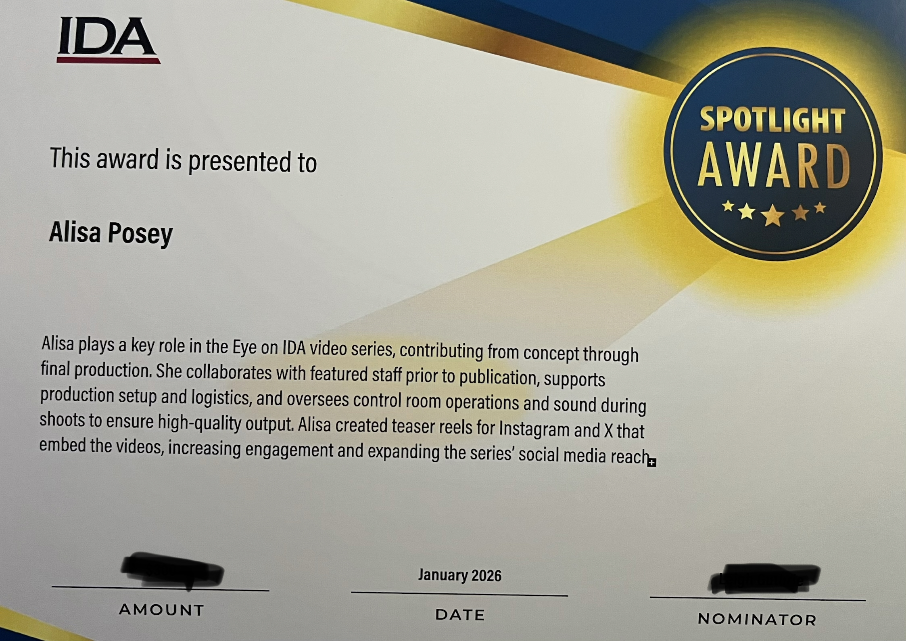

I am a multimedia specialist with over 7+ years of professional experience in video production, editing, and live event work. I have a passion for storytelling and creating engaging content that resonates with audiences. I have worked on a variety of projects, including corporate videos, documentaries, and live events. I am looking for opportunities to create impactful content.
I have a strong background in video production, including filming, editing, and post-production. I am proficient in Adobe Premiere Pro, Final Cut Pro, and other video editing software. I also have experience with live event production, including managing audio and video equipment, coordinating with event staff, and ensuring a smooth production process.
I am particularly proud of my work on the "Eye on IDA" video series, which highlights the work of the Institute for Defense Analyses (IDA) and its impact on national security. I received a 2026 Spotlight Award for my contributions to the series.

Contact me at alisaposey@icloud.com to get to know me and the work that I do.